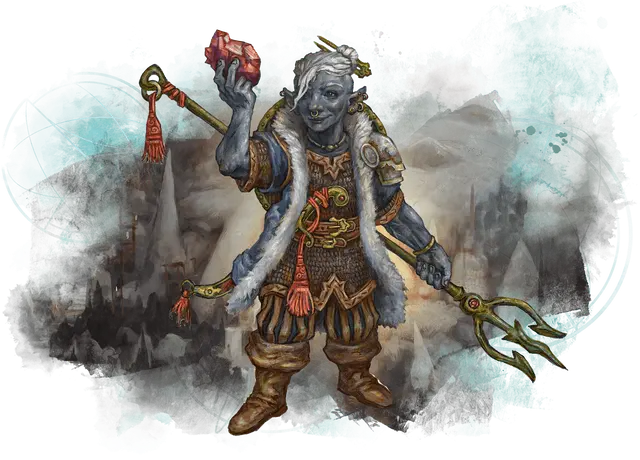

Глубинный гном
Deep Gnome

Глубинные гномы, или свирфнеблины, являются уроженцами Подземья и пропитаны магией этого подземного царства. Они способны необычайно ловко маскироваться, а их свирфнеблинская магия затрудняет их обнаружение. Эти особенности позволили им выживать в течение нескольких поколений среди опасностей Подземья.
Особенности глубинного гнома
Вы обладаете следующими особенностями.
Увеличение характеристик. Выберите одно из: (а) Значение одной характеристики по вашему выбору увеличивается на 2, а другой — на 1; (б) Значение трёх различных характеристик по вашему выбору увеличивается на 1.
Возраст. Как и другие гномы, глубинные гномы могут жить столетиями, до 500 лет.
Скорость. Ваша базовая скорость ходьбы — 30 футов.
Вид существа. Вы — Гуманоид. Вы также считаетесь гномом для любого необходимого условия или эффекта, который требует, чтобы вы были гномом.
Размер. Ваш размер — Маленький.
Тёмное зрение. На расстоянии 120 футов вы при тусклом освещении можете видеть так, как будто это яркое освещение, и в темноте так, как будто это тусклое освещение. В темноте вы не можете различать цвета, только оттенки серого.
Дар свирфнеблина. Начиная с 3-го уровня, вы можете накладывать на себя заклинание маскировка [disguise self] с помощью этой особенности. Начиная с 5-го уровня, вы также можете накладывать на себя заклинание необнаружимость [nondetection], без использования материальных компонентов. После накладывания одного из этих заклинаний с помощью особенности вы должны закончить продолжительный отдых, прежде чем сможете вновь наложить эти заклинания таким образом. Вы также можете накладывать эти заклинания, используя ячейки заклинаний подходящего уровня.
Интеллект, Мудрость или Харизма является вашей базовой характеристикой для этих заклинаний (выберите одну из них при выборе этой расы).
Гномье магическое сопротивление. Вы совершаете с преимуществом спасброски Интеллекта, Мудрости и Харизмы против заклинаний.
Камуфляж свирфнеблина. Когда вы совершаете проверку Ловкости (Скрытность), вы можете совершить её с преимуществом. Вы можете использовать эту особенность количество раз, равное вашему бонусу мастерства. Вы восстанавливаете все потраченные использования по окончании продолжительного отдыха.
Языки. Ваш персонаж может говорить, читать и писать на Общем и еще одном языке, который по вашему мнению подходит для персонажа.